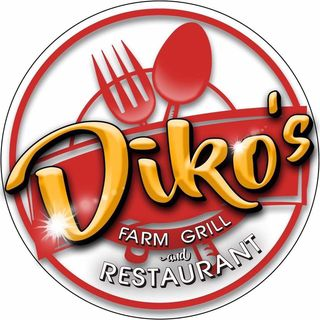

Nestled in the scenic surroundings of Sta. Maria, Bulacan, Diko's Farm Grill and Restaurant invites you
to embark on a gastronomic journey where farm-fresh ingredients meet culinary expertise.

Diko's Farm Grill and Restaurant is more than just a dining destination; it's an escape into the rustic charm of the countryside. Our cozy and welcoming ambiance is enhanced by the lush greenery surrounding the establishment, providing a tranquil setting for a delightful meal.
Bypass Rd. Santa Clara, Sta. Maria, Bulacan (Near Waltermart infront of Shell Gas Station and Burger King)
Monday – Sunday 6:00 AM - 9:00 PM
Whether you're seeking a relaxing weekend lunch or planning a family celebration, Diko's Farm Grill and Restaurant is your haven for genuine farm-to-table experiences. Join us and savor the goodness that nature has to offer on every plate. Dine with us and let the flavors of the farm captivate your senses!
Back© 2023 Patikim ni Sta.Maria. All rights reserved.